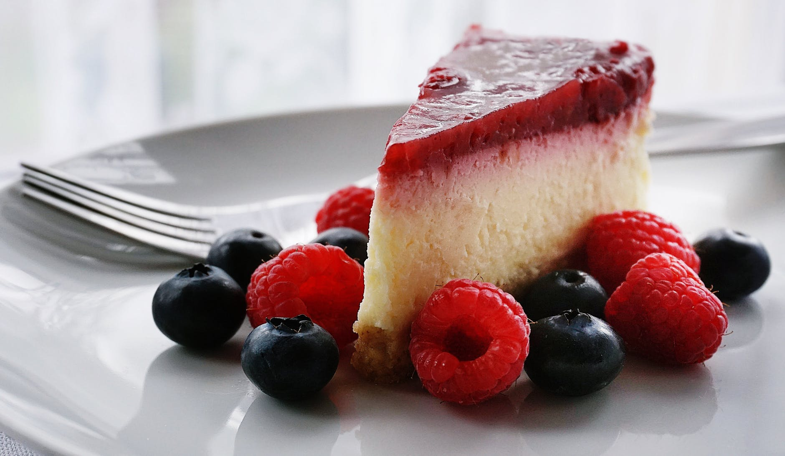
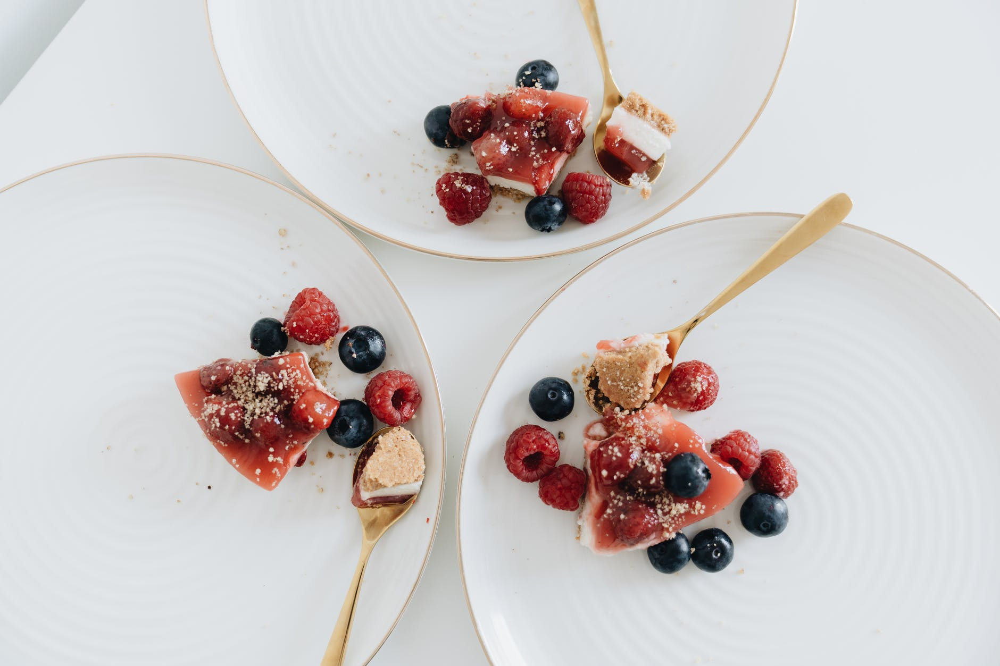

Majoritatea oamenilor preferă să mănânce ceva gustos, însă de cele mai multe ori obosim să stăm și să gătim ziua întreagă. La această problemă există o mare alternativă și anume rețetele cu o pregătire simplă, rapidă, dar și gustoasă. Această este o bună scăpare atunci când avem o sărbătoare. Astfel, astăzi vă propunem să gătim cel mai delicios Cheesecake.
 
| Timp pregătire | Categorie | Bucătărie | Servire | Calorii |
|---|---|---|---|---|
| 40 minute | Desert | Americană | 16 porții | 476 kcal |
Ingrediente:
Pentru blat